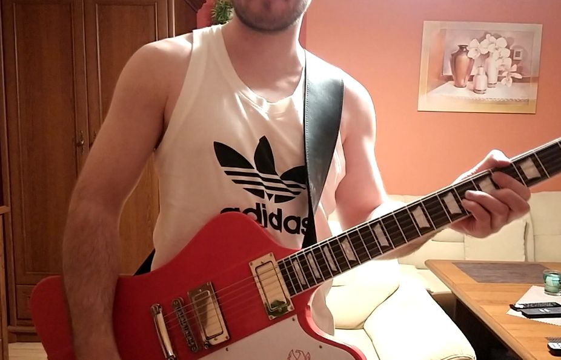

collaboration


- 


artist
- POTEMKINGARAGE
- KAMURA
- みいゆMiiyu
- enriko
- bob
- tyson Blake
- Marty Arrow
- Andy Balcam
- James Asaka
- Vai Hideki
- Lua
- HAYATO
- Takashi Murata
POTEMKINGAREGE
山梨
Yamanashi
独特な哲学的表現、アートな映像、スキルフルなアコースティックギター演奏で人々を魅了する奇才。 SUSHIROCKが初めてコラボしたアーティスト。業界経験は彼が先輩のはずなのに、なぜか、SUSHIROCKのことをアニキと呼ぶ。
A genius who fascinates people with his unique philosophical expression, artistic images, and skillful acoustic guitar playing. The artist that SUSHIROCK collaborated with for the first time. He should be a senior in the industry, but for some reason, SUSHIROCK is called ”Aniki”.
SUSHIROCKとのコラボ作品
「Craftsman」「ミルクの無い朝食 -LAL.style-」
KAMURA
沖縄
Okinawa
SUSHIROCKとS/K UNLIMITEDのユニットを組む、沖縄のコンポーザー兼ギタリスト。 幅広いジャンルの音楽に精通し、SUSHIROCKにはない世界観を繰り広げる。 歌ものだけでなく、彼のギターインストにも注目。
An Okinawan composer and guitarist who forms a unit with SUSHIROCK named "S/K UNLIMITED". Familiar with a wide range of genres of music, he develops a world view not found in SUSHIROCK. Pay attention not only to the songs but also to his guitar instrument
SUSHIROCKとのコラボ作品
S/K UNLIMITED作品多数 「秋の宿題」「taboo -Version S/R-」
みいゆMiiyu
東北
Tohoku
東北を代表する美しきシンガーソングライター。アコギやギタレレ片手に誰もが幸せな気分になるオリジナル楽曲を配信。 Youtube等でオンラインライブを定期的に開催しており、その楽しいライブにも定評がある。 SUSHIROCKの楽曲カバーにも前向きにご協力いただいている。
A beautiful singer-songwriter representing Tohoku area. Delivering original songs that make everyone happy with an acoustic guitar or guitalele in one hand. Online live concerts are held regularly on Youtube, etc., and the fun live concerts have a good reputation. She always cooperates with SUSHIROCK's music cover positively.
SUSHIROCKとのコラボ作品
「カケヒキ」「I hate you -tribute Miiyu-」

enriko
福島県出身。宮城県在住
Fukushima Miyagi
普段は主婦しながらママさんアマチュアシンガーソングライターとして活動する傍ら、仕事は介護福祉士として勤務、通信大学にて心理学、他に音楽療法も勉強中。 パワフルな歌唱と、華麗なるピアノ演奏が彼女の武器であり、SUSHIROCKとも複数の共作を行う。 オリジナル業界のムードメーカー。
While working as a mama's amateur singer-songwriter while being a housewife, she works as a long-term care welfare worker, studying psychology at a correspondence university, and also studying music therapy. Her weapons are powerful singing and splendid piano performance, and she has collaborated with SUSHIROCK on multiple occasions. The mood maker of the original industry.
SUSHIROCKとのコラボ作品
「move on to a new path」「FUTARI〜故郷と風と〜(LAL4)」 「アナタへの未練」
bob
博多
Hakata
博多金太郎ギターで、Amを中心にオリジナル曲を歌う「愛の伝道師」。彼の常識破りギタープレイとセクシーな歌声が奏でるラブソングは、老若男女問わず人々を未了する。その独特な作詞センスをリスペクトし、SUSHIROCKは作詞をお願いすることがある。
"Evangelist Of Love" who sings original songs centered on Am on Hakata Kintaro guitar. His unconventional guitar play and sexy singing voice make love songs unfinished for men and women of all ages. Respecting that unique songwriting sense, SUSHIROCK may ask you to write the lyrics.
SUSHIROCKとのコラボ作品
「音楽戦隊ミュージマン♪」
tyson Blake
Illinois.America
先進的で芸術的な音楽を生み出すアメリカのミュージシャン。ギター、ベース、DTM等と様々なプレイやアプローチを行う。 SUSHIROCKの音楽を気に入ってくれたことから親交が始まり、時に共作を行う。 また、SUSHIROCKの主催するオンライン英会話の協力者でもある。
An American musician who produces advanced and artistic music. Performs various plays and approaches with guitar, bass, DTM, etc. The friendship started because he liked SUSHIROCK's music, and sometimes he co-wrote. He is also a collaborator of online English conversation sponsored by SUSHIROCK.
SUSHIROCKとのコラボ作品
「What's going on？」
Marty Arrow
Poland
ポーランド出身のギタリストであり、ロックからフュージョン等、様々なオリジナルインストを配信している。 SUSHIROCKがたまたまそのプレイを目にし、その美しいトーンとセクシーなプレイに魅了され、オファーしたことから共作が実現。
A guitarist from Poland, he distributes various original instruments such as rock and fusion. SUSHIROCK happened to see the play, was fascinated by its beautiful tone and sexy play, and offered it, so the collaboration was realized.
SUSHIROCKとのコラボ作品
「Summer Syndrome」
Andy Balcam
England
大英帝国が誇るザ・ロックギタリスト。 古き良きロックなギタープレイと、そのプレイスタイルのHotさに魅了されたSUSHIROCKからのオファーにより、共作が実現。彼の女性がプリントされたギターもまたCoolである。
The rock guitarist proud of the British Empire. Co-production is realized by the offer from SUSHIROCK, who was fascinated by the good old rock guitar play and the hotness of the play style. The guitar on which his woman is printed is also Cool.
SUSHIROCKとのコラボ作品
「Masurao Man」「Nothing but Rock'nRoll -Ver.UK-」
James Asaka
渋谷
Shibuya
聖飢魔Ⅱのダミアン浜田氏を敬愛するHRHMギタリスト。しかし、繊細なバラードからポップスまで多彩なギタープレイに対応し、様々なジャンルのオリジナル音楽を生み出す。 コラボの際は、原曲の魅力を何倍も輝かせるプレイやアレンジを行う。
An HRHM guitarist who admires Damian Hamada of Seikima II. However, it supports a variety of guitar play from delicate ballads to pop music, and produces original music of various genres. When collaborating, we will play and arrange to make the charm of the original song shine many times.
SUSHIROCKとのコラボ作品
「ファイナル・ハピネス2021」「天下泰平」
Vai Hideki
埼玉
Saitama
名ギタリストスティーブ・ヴァイを愛するロックギタリスト。そのHotなギタープレイは一度観た者の心に強い印象を与える。圧倒的なギターテクニックと、アマチュア音楽界の賢者として、SUSHIROCKとのコラボを支える。
Rock guitarist who loves the famous guitarist Steve Vai. The hot guitar play impresses the hearts of those who have seen it once. With overwhelming guitar technique, he supports collaboration with SUSHIROCK as a wise man in the amateur music world.
SUSHIROCKとのコラボ作品
「Go!Go! ～華麗なる瞬間～ 2021」

Lua
宮崎
Miyazaki
その個性的でセクシーな声と歌唱力で多くの人々を魅了する女性シンガーソングライター。POTEMKINGAREGEの清水氏とのユニット「ルアムキン」としての活動も行い、「魚影」は第2回ネオコンテストで銅賞を受賞。
A female singer-songwriter who fascinates many people with her unique and sexy voice and singing ability. He also worked as a unit "Luamkin" with Mr. Shimizu of POTEMKINGAREGE, and "Uokage" won the bronze prize at the 2nd Neo Contest.
SUSHIROCKとのコラボ作品
「維新伝 -HOPE OF ZIPANG-」
HAYATO
高知、四万十市出身 大阪在住
Shimanto.Kouchi Osaka
普段はエレベーター据付けを行う「ガテン系」ギタリスト。そのプレイは布袋〇泰や、松本〇弘といったジャパニーズギタリズムの正当継承を感じる。 そのサウンドとプレイはとにかく「カッコいい」以外の表現が見つからない。
A "gatten" guitarist who usually installs elevators. The play feels the legitimate inheritance of Japanese guitarism such as Hotei Tomoyasu and Matsumoto Tomoyasu. Anyway, I can't find any expression other than "cool" for the sound and play.
SUSHIROCKとのコラボ作品
「アナタへの未練」
Takashi Murata
日本
Japan
世界を相手に圧倒的なテクニックで活躍するギタリスト。Speedmetal,HeavyMetal ,progressiverock,neoclassical ,HardRock等幅広いジャンルのオリジナル楽曲の配信を行う。SUSHIROCKには音楽活動における様々な助言を与える。
A guitarist who plays an active part in overwhelming technique against the world. Distributes original songs of a wide range of genres such as Speedmetal, Heavy Metal, progressive rock, neoclassical, and Hard Rock. Give SUSHIROCK various advice in music activities.
SUSHIROCKとのコラボ作品
「TELL ME THE WAY」